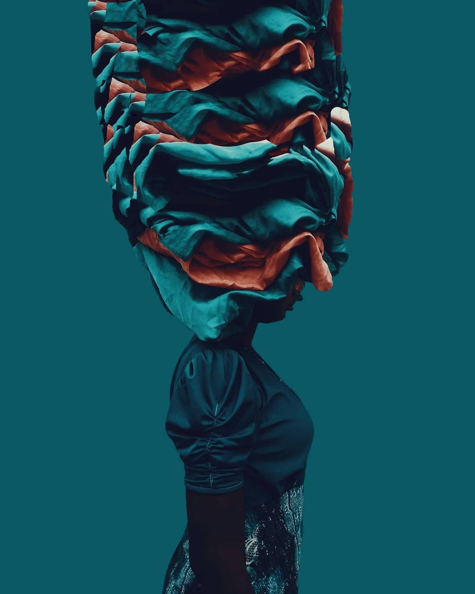

A curated eye for the extraordinary within the everyday.
Fine Art · Documentary · Conceptual · Portrait

Tenderness
& Gravity
Black and white fine art portraits that hold the quiet weight of being.
"I photograph what people carry in silence — their beauty, their resistance, their ordinary grace."
— Adediran Adetutu
The Collections
Organised by vision, not by genre.

Adediran
Adetutu
Lagos-based photographer drawn to the drama of the mundane and the tenderness of the overlooked. Her work moves between fine art, documentary, and conceptual portraiture — always in pursuit of what a face holds in silence.
Her images ask you to slow down. To look again.
Read the StoryIn Their Words
Adetutu has a rare gift — she photographs people as if she already knows their secrets. Every frame carries a weight that stays with you long after you've looked away.
She sees what others walk past. The images she made for our campaign didn't just sell a product — they told a story we didn't even know we had.
Let's make
something lasting.
Available for commissioned portrait work, fine art projects, editorial collaborations, and documentary storytelling.